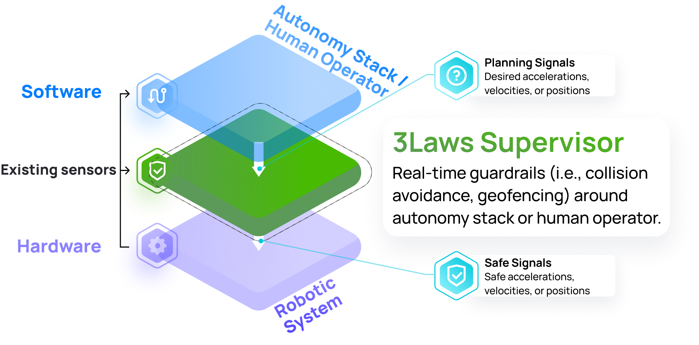
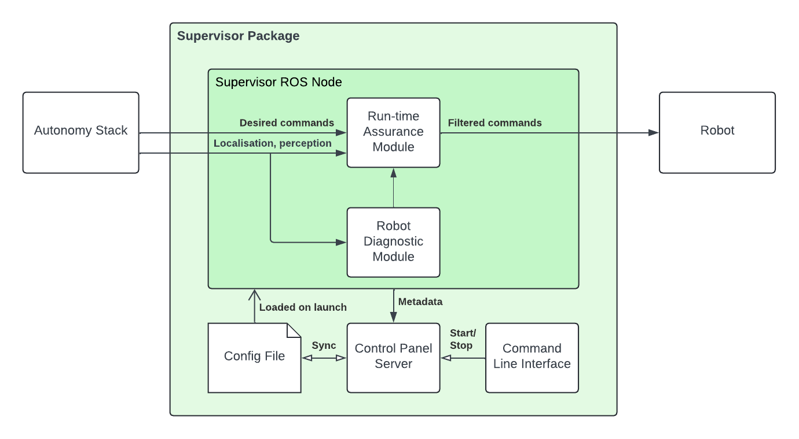

User Guide
The 3Laws Supervisor is a software-based layer providing reliable and high-performance sense-and-avoid capabilities for a variety of dynamic platforms. It intervenes to prevent collisions when the autonomy stack or human command layer fails to do so.
The Supervisor is designed to sit between the autonomy stack and the robot’s low-level controllers:
{kind=link}
Nominally, the Supervisor forwards un-altered the desired commands from the autonomy/planning stack to the robot. However, when the commands appear to drive the vehicle towards a collision or fail in some way, the Supervisor can intervene by modifying the desired commands in a minimally intrusive way to avoid a collision.
The Supervisor is delivered as a single package containing various tools and modules working together toward enabling these sense-and-avoid capabilities:
{kind=link}
The Supervisor’s core functionality is the Runtime Assurance Module (RAM). This module is responsible for continuously filtering the desired commands sent by the planner to the vehicle in order to prevent unsafe behaviors in a minimally invasive way. This module is also responsible for implementing the fault management strategy in case a failure of a critical component of the system is detected.
Complementary to the RAM, the Supervisor integrates a Robot Diagnostic Module (RDM). This module is responsible for monitoring the health and safety of these critical sub-systems more holistically. The monitoring results are available as metrics that are published in real-time on ROS topics. These metrics can be used to better understand the behavior of the robot and to trigger alternative actions.
Warning
The RDM is currently in experimental phase, and the diagnostic performed by the RDM is not fed to the RAM’s Fault Management system.
In order for the RAM and RDM to work effectively, they need to be configured based on the robot’s characteristics. This is done through the Control Panel (CP), a web-based application that guides the user through the Supervisor configuration. CP also provides a way to visualize the robot’s safety metrics in real time.
The Supervisor package also includes a Command Line Interface (CLI) for managing the Control Panel execution and Supervisor software updates from a terminal.
Important
At launch time, the Supervisor node loads configuration from the YAML file located at ~/.3laws/config/supervisor.yaml. This file is created and updated by the CP. It can be manipulated manually for advanced configuration and backup.
Important
The Supervisor generates a single log file located at ~/.3laws/log/supervisor.log. This file is overwritten at each launch. The logs are useful for debugging and monitoring the Supervisor’s behavior. If you want to disable this file logging, you can specify an empty log_filepath ROS parameter as part of the launch.